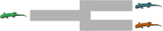

Glossary¶
- Comparison/taxon
A taxon we are analyzing. This can comprise two populations/species, in which case we are interested in the time that they diverged. This can also comprise a single population/species, in which case we are interested in the time that it underwent a change in effective population size.
Our goal is to compare the times the times of divergence or demographic changes across comparisons.
If we are only analyzing pairs of populations for which we want to compare their divergence times, we will often use “population pair” or just “pair” in place of “comparison.”
We will use to denote the number of comparisons.
- Demographic-change comparison
A comparison comprising one population/species. The mode we will assume for such a comparison is a population undergoing an instantaneous increase or decrease in effective population size at some time in the past.
- Divergence comparison
A comparison comprising two populations/species. The model we will assume for such a comparison is an ancestral population diverging into two descendant populations at some time in the past.

- Event model
- () The number of events, their times, and the partitioning of the comparisons to those events.
- Event subsets
- () The partitioning of the comparisons into subsets, each of which share an event. This can range from all comparisons being lumped together () to all comparisons being split up ().
- Event times
() The time at which one or more comparisons underwent a divergence and/or demographic change. If we are only analyzing pairs of populations, we will often use “divergence event.”
We will use to denote the number of events, which can range from one to the number of comparisons.
{kind=link}
{kind=link}